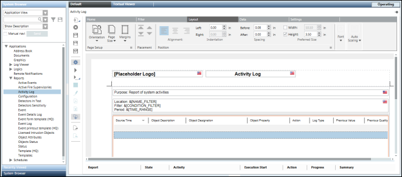

Edit Mode
When you create a new Report Definition, it opens in Edit mode (default mode).
Edit mode allows you to design the layout of a report, delete a report, and so on. You can also display/hide the Reports ribbon using the Properties icon .


NOTE:
You can switch to Run mode by clicking the Run icon or Run As icon in the Reports toolbar.